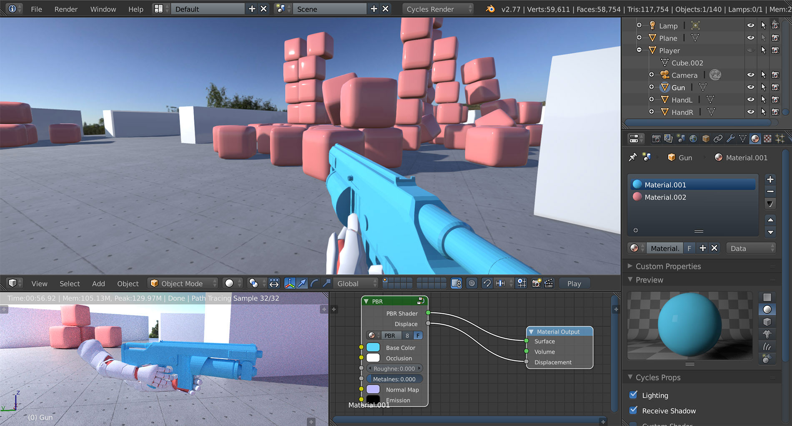

Welcome

Please consider reading through this manual before purchasing preview. The main limitations are:
- Use only the bundled Armory PBR node for materials. Node parser is currently being rewritten for more efficiency.
- Armory player renders always on top, hiding popups as a result.
- No open world data streaming / LOD support.
- Minimal docs / API functionality out of the box.
- Graphical effects require more tweaking.
- Python / JS scripts not supported on native targets.
- Very few logic nodes implemented.
- Likely breaking backward compatibility.
To reach the first release, all of these issues need to get resolved.
Armory SDK can be used on Windows, Linux and MacOS. To learn about the web, desktop and mobile platforms you can target, see publishing section.
Getting started
Essentials
Graphics
Scripting
To make the scene interactive, logic nodes, Python, JavaScript or Haxe scripts are used. Haxe is recommended for maximum potential.
How to